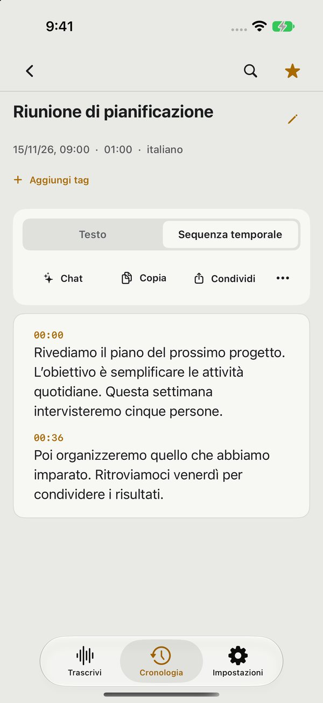
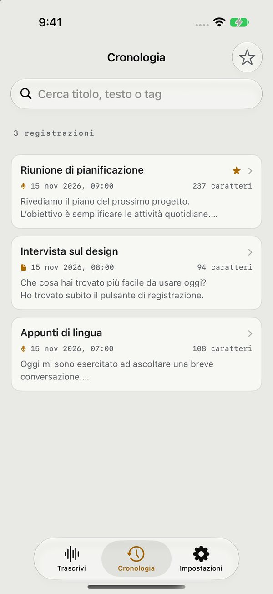
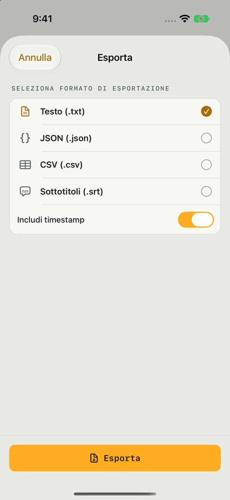

La tua voce,diventata testo.
Registra una riunione, una lezione o un'intervista — oppure importa un file audio o video — e ottieni una trascrizione sul tuo iPhone o iPad.
Trascrivi in tempo reale mentre registri sui dispositivi compatibili con iOS 26 o successivo. Con Apple Intelligence attivo, chiedi un riepilogo AI nella chat della trascrizione.
- Tutte le funzioni gratis
- Nessuna pubblicità
- Nessun acquisto in-app
- Nessun account
- iPhone e iPad
Tutte le funzioni, gratis.
Non esiste un piano a pagamento. Tutto ciò che è elencato in questa pagina — registrazione, importazione di file, tutti i modelli Whisper, esportazione, cronologia, tag, chat con Apple Intelligence e Comandi Rapidi — è disponibile senza costi. Non devi creare un account e l'app non mostra pubblicità.
- Nessun abbonamento e nessun acquisto una tantum
- Nessun acquisto in-app e nessuna funzione bloccata
- Nessuna pubblicità e nessun tracciamento di terze parti
- Nessuna registrazione e nessun accesso
- Nessun limite impostato dall'app su durata delle registrazioni o numero di file — restano comunque i limiti di spazio, memoria e batteria del dispositivo
Dall’audio alla trascrizione
Registra o importa
Tocca per registrare con il microfono oppure scegli un file audio o video da File o Foto. Puoi mettere in pausa e riprendere durante la registrazione.
Leggi, modifica ed esporta
Rivedi il testo con i timestamp, correggi eventuali errori, poi condividilo come TXT, CSV, JSON o sottotitoli SRT.
Cosa puoi fare
Uno sguardo più da vicino alle parti principali dell'app.
Registra o usa i tuoi file
Avvia una registrazione con un tocco oppure importa qualcosa che hai già. L'app converte l'audio e lo trascrive sul dispositivo.
- Registrazione dal microfono con pausa e ripresa, e selettore del microfono per microfoni esterni
- Stato della registrazione sulla schermata di blocco e nella Dynamic Island tramite una Live Activity (sugli iPhone supportati)
- Importa audio e video come M4A, WAV, MP3, MP4 e MOV dall'app File
- Scegli un video direttamente dalla libreria Foto
- Opzione «Mantieni lo schermo acceso» per sessioni lunghe
Whisper, in esecuzione sul tuo dispositivo
L'app usa i modelli Whisper aperti di OpenAI tramite whisper.cpp, con accelerazione GPU Metal dove disponibile. Puoi privilegiare la velocità o la precisione scegliendo un modello diverso.
- 10 modelli Whisper, da Tiny (circa 15 MB) a Large v3 Turbo e Medium (fino a circa 1,5 GB)
- Rilevamento automatico della lingua o scelta tra 18 lingue
- Traduzione facoltativa del risultato in inglese
- Download facoltativo dell'encoder Core ML che può velocizzare l'elaborazione sui dispositivi supportati
- Su iOS 26 o versioni successive è disponibile anche il motore vocale di Apple sul dispositivo, come alternativa

Sequenza temporale o vista di lettura
Passa da una vista di testo pulita a una sequenza temporale con i timestamp. Riascolta l'audio originale per verificare quanto detto e correggi il testo quando serve.
- Vista testo e vista sequenza temporale, con timestamp facoltativi
- Riproduzione audio con velocità e posizione regolabili
- Modifica della trascrizione e del titolo
- Copia di un singolo paragrafo o dell'intero testo
- Ricerca all'interno di una trascrizione

Una cronologia in cui cercare
Ogni trascrizione viene salvata sul tuo dispositivo, così puoi tornarci quando vuoi.
- Ricerca per titolo, testo o tag
- Preferiti e ordinamento
- Tag che puoi aggiungere, rinominare, unire ed eliminare in tutte le trascrizioni
- Filtro della cronologia per tag

Testo, dati o sottotitoli
Condividi una trascrizione nel formato adatto al passo successivo: appunti, un foglio di calcolo, uno script o un editor video.
- TXT per appunti e documenti
- CSV per fogli di calcolo
- JSON con segmenti per i tuoi strumenti
- Sottotitoli SRT per il montaggio video
- Condivisione della registrazione originale come file audio
Chiedi informazioni su una trascrizione iOS 26+
Sui dispositivi che supportano Apple Intelligence, puoi chattare con una trascrizione — chiedere un riassunto, le decisioni chiave o le azioni da intraprendere — e generare un titolo. Le chat vengono salvate per ogni trascrizione. Le trascrizioni lunghe vengono elaborate in sezioni. Una modalità facoltativa Private Cloud Compute (iOS 27 o versioni successive) è disattivata per impostazione predefinita.
Comandi Rapidi e Siri
Usa i Comandi rapidi dell'app per avviare o fermare una registrazione, trascrivere un file multimediale, trovare trascrizioni, ottenere il testo di una trascrizione o aggiungere tag e preferiti: comodo per le automazioni. Alcune azioni richiedono una versione più recente di iOS.
Tutte le funzioni, tutte gratis
L'elenco completo di ciò che l'app offre attualmente. Niente di tutto questo richiede un acquisto.
Acquisizione
- Registrazione dal microfonoGRATIS
- Pausa e ripresa della registrazioneLa registrazione gestisce anche le interruzioni, come le chiamateGRATIS
- Cambio del microfonoGRATIS
- Live Activity durante la registrazioneSchermata di blocco e Dynamic IslandGRATIS
- Importazione di file audioM4A, WAV, MP3 e altri formati comuniGRATIS
- Importazione di file videoMP4, MOV e altri formati comuniGRATIS
- Importazione di video da FotoGRATIS
- Trascrizione liveIl testo appare mentre parli · iOS 26+GRATIS
Riconoscimento vocale
- Whisper sul dispositivo (whisper.cpp)GRATIS
- Tutti i 10 modelli WhisperTiny, Base, Small, Medium, Large v3 Turbo e varianti compatteGRATIS
- Motore vocale di Apple sul dispositivoiOS 26+, lingue gestite da iOSGRATIS
- Rilevamento automatico o scelta tra 18 lingueGRATIS
- Traduzione in ingleseGRATIS
- Accelerazione GPU MetalDove il dispositivo lo supportaGRATIS
- Encoder Core ML (download facoltativo)GRATIS
Strumenti per precisione e prestazioni
- Salto delle sezioni silenzioseRilevamento dell'attività vocale (VAD)GRATIS
- Pulizia dell'audioRiduzione del rumore e normalizzazione del volumeGRATIS
- Suggerimenti di vocabolarioNomi e termini che il modello dovrebbe aspettarsiGRATIS
- Flash AttentionPuò ridurre l'uso di memoria e velocizzare l'elaborazioneGRATIS
- Inclusione dei timestampGRATIS
Lettura e modifica
- Vista testo e vista sequenza temporaleGRATIS
- Riproduzione audio con controllo della velocitàGRATIS
- Modifica del testo e del titolo della trascrizioneGRATIS
- Copia di un paragrafo o dell'intero testoGRATIS
- Ricerca all'interno di una trascrizioneGRATIS
Cronologia e organizzazione
- Cronologia delle trascrizioni salvataGRATIS
- Ricerca per titolo, testo o tagGRATIS
- Preferiti e ordinamentoGRATIS
- Tag: aggiungi, rinomina, unisci, eliminaGRATIS
- Filtro per tagGRATIS
Esportazione e condivisione
- Testo (.txt)GRATIS
- CSV (.csv)GRATIS
- JSON (.json)GRATIS
- Sottotitoli (.srt)GRATIS
- Condivisione dell'audio originaleGRATIS
- Condivisione del testo tramite il pannello di condivisioneGRATIS
Apple Intelligence
- Chat su una trascrizioneiOS 26+ sui dispositivi supportatiGRATIS
- Cronologia delle chat salvata per ogni trascrizioneGRATIS
- Generazione di un titoloGRATIS
- Modalità Private Cloud ComputeFacoltativa · iOS 27+ · disattivata per impostazione predefinitaGRATIS
Automazione e app
- Azioni di Comandi Rapidi e SiriGRATIS
- Layout per iPhone e iPadGRATIS
- Aspetto chiaro, scuro o di sistemaGRATIS
- Interfaccia in 11 lingueGRATIS
- Gestione di modelli e spazio di archiviazioneGRATIS
Le funzioni contrassegnate da una versione di iOS richiedono quella versione o una successiva. Le funzioni di Apple Intelligence dipendono anche dal supporto del dispositivo, dalla regione e dalle impostazioni della lingua.
Progettata per tenere il tuo audio sul tuo dispositivo
La trascrizione con Whisper avviene localmente. L'app non include pubblicità, SDK di analisi o tracciamento di terze parti e non invia il tuo audio o le tue trascrizioni allo sviluppatore.
Resta sul tuo dispositivo
Registrazioni, file multimediali importati, trascrizioni, tag, chat e impostazioni sono salvati nell'app, sul tuo dispositivo. Puoi eliminarli in qualsiasi momento dall'app.
Quando l'app si collega
Per scaricare i file dei modelli Whisper, VAD e Core ML da Hugging Face; per verificare sull'App Store se è disponibile una versione più recente; e quando iOS scarica i modelli vocali per il motore di Apple.
La scelta è tua
Private Cloud Compute per Apple Intelligence è disattivato per impostazione predefinita. Se lo attivi, il testo della trascrizione e la tua domanda vengono elaborati da Private Cloud Compute di Apple. La condivisione di un'esportazione la invia dove scegli tu.
Prima di iniziare
Dispositivo e sistema
iPhone o iPad con iOS / iPadOS 17.0 o versioni successive. Trascrizione live, il motore vocale di Apple e Apple Intelligence sul dispositivo richiedono iOS 26 o versioni successive; Private Cloud Compute richiede iOS 27 o versioni successive.
Spazio e rete
Per scaricare un modello servono una connessione a internet e spazio libero (da circa 15 MB a 1,5 GB a seconda del modello). Per registrare serve il permesso di accesso al microfono.
Domande frequenti
L'app è davvero gratis?
Sì. Al momento tutte le funzioni sono gratuite. Non ci sono pubblicità, acquisti in-app, abbonamenti né registrazione di un account.
Funziona offline?
La trascrizione con Whisper è progettata per essere eseguita sul tuo dispositivo. Serve una connessione a internet una volta per scaricare un modello; dopodiché, con quel modello, registrazione e trascrizione possono di solito essere fatte senza connessione. Per scaricare altri modelli, verificare la presenza di aggiornamenti e usare la modalità facoltativa Private Cloud Compute serve una connessione.
Il mio audio viene inviato a un server?
La trascrizione con Whisper avviene localmente e l'app non invia audio o trascrizioni allo sviluppatore. L'unica eccezione che puoi controllare è la modalità facoltativa Private Cloud Compute per la chat con Apple Intelligence, che invia il testo della trascrizione e la tua domanda a Private Cloud Compute di Apple. È disattivata per impostazione predefinita.
Quali file posso importare ed esportare?
Puoi importare i formati audio e video più comuni, come M4A, WAV, MP3, MP4 e MOV, da File, e video da Foto. Le trascrizioni possono essere esportate come TXT, CSV, JSON o SRT, e le registrazioni possono essere condivise come file audio.
Quali lingue sono supportate?
Per la trascrizione puoi usare il rilevamento automatico o scegliere tra inglese, giapponese, cinese, coreano, spagnolo, francese, tedesco, italiano, portoghese, russo, arabo, hindi, olandese, polacco, turco, vietnamita, thai o indonesiano. I risultati possono variare da lingua a lingua. L'interfaccia dell'app è disponibile in 11 lingue.
Può creare sottotitoli per un video?
Sì. Importa un video, trascrivilo, poi esportalo come SRT. La maggior parte degli editor video può importare file SRT. La sincronizzazione dei sottotitoli segue i segmenti riconosciuti, quindi potresti volerla ritoccare nel tuo editor.
Quanto può durare una registrazione?
L'app non imposta un limite fisso. In pratica, un audio molto lungo dipende dallo spazio libero, dalla memoria e dalla batteria del dispositivo, e i modelli più grandi richiedono più tempo. Se un file lungo non va a buon fine, un modello più piccolo o Flash Attention possono aiutare.
Questa è un'app ufficiale di OpenAI?
No. È un'app indipendente che esegue i modelli Whisper distribuiti apertamente da OpenAI tramite il progetto open source whisper.cpp. Non è affiliata a OpenAI né approvata da OpenAI.